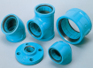

2026年
問題120 給湯設備に使用される材料に関する次の記述のうち，最も不適当なものはどれか．
(1)耐熱性硬質ポリ塩化ビニルライニング鋼管には，管端防食継手を使用する．
(2)ステンレス鋼鋼管は，酸化被膜による母材の不動態化によって耐食性を維持している．
(3)銅管は，管内の流速が速いと潰食が生じる．
(4)ポリブテン管の線膨張係数は，銅管と比較して小さい．
(5)樹脂管は，使用温度が高くなると許容使用圧力は低くなる．
2026年
問題120 正解（4） 頻出度AAA
線膨張係数はポリブテン管の方が大きい（2026-120-1表参照）．
2026-120-1表 配管材料の線膨張係数
| 管種 | 線膨張係数［1/℃］ |
| 銅管 | 1.77×10-5 |
| ステンレス鋼管 | 1.73×10-5 |
| 鋼管 | 1.10×10-5 |
| 耐熱性硬質ポリ塩化ビニル管 | 6×10-5〜8×10-5 |
| 架橋ポリエチレン管 | 14×10-5〜23×10-5 |
| ポリブテン管 | 12×10-5〜15×10-5 |
金属管と樹脂管の線膨張係数を比べると，樹脂管の方が金属管より数倍から十数倍大きい．
-(1) 管端防食継手を使用することによって，ねじ切りして露出した配管の金属面が内部を流れる液体に直接触れることがなくなる（2026-120-1図参照）．
2026-120-1図 管端防食継手の例

出典 日本継手株式会社
https://www.nippon-pf.co.jp/pw/w_coretsugite/
-(2) ステンレス鋼管も酸化保護被膜によって耐食性を有しているので，この酸化保護被膜が破壊されると孔食，隙間腐食，残留応力腐食，もらいさびによる腐食の恐れがある．
酸化保護被膜（不動態皮膜とも言われる）は，金属表面が空気中や水中の酸素と反応して形成される，非常に薄く安定した酸化物の層のことで，一旦形成されると，内部の金属と外部の空気や水分が直接触れるのを防ぎ，さらなる腐食やサビの発生を抑える．ステンレスの不動態被膜はクロム（Cr）を含む水和オキシ酸化物で，その厚さ5nm程度である．
隙間腐食は金属同士の隙間，金属と他の物質との隙間に，電解質溶液（塩類が溶けている水等）の濃度差や溶存酸素量の差等によって，局部的に発生する腐食をいう．
残留応力腐食は，金属に過大な荷重をかけたり，曲げ加工をしたりすると，金属内に残留応力が生じ，その部分の酸化被膜が局部的に破壊され，化学作用と応力との共同作用によって生じる腐食をいう．硬いステンレス鋼管に特徴的に起きる（柔らかい銅管では応力が残らないのでその危険が小さい）．
-(5) 樹脂ライニング管，樹脂管の使用温度2026-120-2表参照．
2026-120-2表 樹脂ライニング管，樹脂管の使用温度
| 耐熱性硬質塩化ビニルライニング鋼管 | 85℃以下 |
| 耐熱性硬質ポリ塩化ビニル管 ポリブテン管 |
90℃以下 |
| 架橋ポリエチレン管 | 95℃以下 |
樹脂管は使用温度が高くなると許容使用圧力は低くなる．
（例）耐熱性硬質ポリ塩化ビニル管（呼び径 50 以下）5℃～40℃設計圧力（静水圧+水撃圧）1.0MPa ⇛ 71℃～90℃ 0.2MPa（出典 クボタケミックスhttps://www.kubota-chemix.co.jp/dcms_media/other/faq10-20100720.pdf）
また，樹脂管を温度の高い湯に使用すると，塩素による劣化が生じやすい．